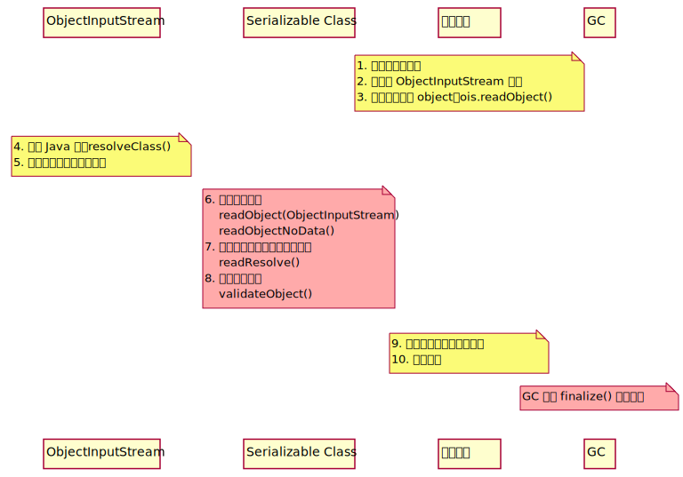

Created: 2022-05-29 Sun 23:56
GadgetInspector 是 Black Hat 2018 上 Netflix 安全团队展示的一个 Java 静态分析工具，用于挖掘 Java 反序列化利用链。其核心思路是利用 ASM 模拟 JVM 运行时操作数栈和局部变量表的修改情况，实现代码执行过程中的污点路径分析，而不需要去实际执行字节码
攻击者通过控制输入流中的数据，可以控制目标代码的行为

void foo() {
int a = source();
int x;
x = a * 2;
sink(x);
}
void foo() {
int a = source();
int x = 0;
if (a < 0) {
x += 1;
}
sink(x);
}
一个 Java Class 字节码操作库，使用访问者设计模式。开发者通过实现 ASM 提供的 API 来操控 Java Class 结构
比如通过 ClassVisitor 构建一个 Java Class, ASM 会依次执行下述访问方法，开发者只需要在自己实现的 ClassVisitor 子类中重写以下方法而不需要直接操作数据
visit [ visitSource ] [ visitModule ][ visitNestHost ][ visitOuterClass ] ( visitAnnotation | visitTypeAnnotation | visitAttribute )* ( visitNestMember | [ * visitPermittedSubclass ] | visitInnerClass | visitRecordComponent | visitField | visitMethod )* visitEnd
虚拟机栈帧结构，GadgetInspector 通过操作数栈和局部变量表传递污点标记
public class GadgetInspector {
public static void main(String[] args) throw Exception {
...
if (...) {
MethodDiscovery methodDiscovery = new MethodDiscovery();
methodDiscovery.discover(classResourceEnumerator);
methodDiscovery.save();
}
...
}
}
public class GadgetInspector {
public static void main(String[] args) throw Exception {
...
if (...) {
MethodDiscovery methodDiscovery = new MethodDiscovery();
methodDiscovery.discover(classResourceEnumerator);
methodDiscovery.save();
}
if (...) {
PassthroughDiscovery passthroughDiscovery = new PassthroughDiscovery();
passthroughDiscovery.discover(classResourceEnumerator, config);
passthroughDiscovery.save();
}
...
}
}
public class GadgetInspector {
public static void main(String[] args) throw Exception {
...
if (...) {
PassthroughDiscovery passthroughDiscovery = new PassthroughDiscovery();
passthroughDiscovery.discover(classResourceEnumerator, config);
passthroughDiscovery.save();
}
if (...) {
CallGraphDiscovery callGraphDiscovery = new CallGraphDiscovery();
callGraphDiscovery.discover(classResourceEnumerator, config);
callGraphDiscovery.save();
}
...
}
}
public class GadgetInspector {
public static void main(String[] args) throw Exception {
...
if (...) {
CallGraphDiscovery callGraphDiscovery = new CallGraphDiscovery();
callGraphDiscovery.discover(classResourceEnumerator, config);
callGraphDiscovery.save();
}
if (...) {
SourceDiscovery sourceDiscovery = config.getSourceDiscovery();
sourceDiscovery.discover();
sourceDiscovery.save();
}
...
}
}
public class GadgetInspector {
public static void main(String[] args) throw Exception {
...
if (...) {
SourceDiscovery sourceDiscovery = config.getSourceDiscovery();
sourceDiscovery.discover();
sourceDiscovery.save();
}
{
GadgetChainDiscovery gadgetChainDiscovery = new GadgetChainDiscovery(config);
gadgetChainDiscovery.discover();
}
}
}
将目标 jar 或 war（WEB-INF/classes & WEB-INF/lib）资源添加到 classpath, 后续用来加载类
if (args.length == argIndex+1 && args[argIndex].toLowerCase().endsWith(".war")) {
Path path = Paths.get(args[argIndex]);
classLoader = Util.getWarClassLoader(path);
} else {
final Path[] jarPaths = new Path[args.length - argIndex];
for (int i = 0; i < args.length - argIndex; i++) {
...
jarPaths[i] = path;
}
classLoader = Util.getJarClassLoader(jarPaths);
}
final ClassResourceEnumerator classResourceEnumerator = new ClassResourceEnumerator(classLoader);
通过 String.class 定位 rt.jar
URL stringClassUrl = Object.class.getResource("String.class");
URLConnection connection = stringClassUrl.openConnection();
Collection<ClassResource> result = new ArrayList<>();
if (connection instanceof JarURLConnection) {
URL runtimeUrl = ((JarURLConnection) connection).getJarFileURL();
URLClassLoader classLoader = new URLClassLoader(new URL[]{runtimeUrl});
for (ClassPath.ClassInfo classInfo : ClassPath.from(classLoader).getAllClasses()) {
result.add(new ClassLoaderClassResource(classLoader, classInfo.getResourceName()));
}
return result;
}
Java9 新增了模块化特性，通过 jrt:/ 协议来获取运行时类
FileSystem fs = FileSystems.getFileSystem(URI.create("jrt:/"));
Files.walk(fs.getPath("/")).forEach(p -> {
if (p.toString().toLowerCase().endsWith(".class")) {
result.add(new PathClassResource(p));
}
});
通过 ClassResourceEnumerator 枚举每个类并获取输入流，利用 ASM 记录类、属性、方法的信息
通过递归枚举父类和所有接口，记录类的继承链
输出格式： <类名> <父类名> <接口> <接口>...
private static void getAllParents(...) {
Set<ClassReference.Handle> parents = new HashSet<>();
if (classReference.getSuperClass() != null) {
parents.add(new ClassReference.Handle(classReference.getSuperClass()));
}
for (String iface : classReference.getInterfaces()) {
parents.add(new ClassReference.Handle(iface));
}
for (ClassReference.Handle immediateParent : parents) {
ClassReference parentClassReference = classMap.get(immediateParent);
if (parentClassReference == null) {
continue;
}
allParents.add(parentClassReference.getHandle());
// 递归查找所有父类或接口，都添加到allParents中
getAllParents(parentClassReference, classMap, allParents);
}
}
分析方法的返回值受到哪些参数的影响
public class PassthroughDiscovery {
private final Map<MethodReference.Handle, Set<MethodReference.Handle>> methodCalls = new HashMap<>();
private Map<MethodReference.Handle, Set<Integer>> passthroughDataflow;
public void discover(...) {
Map<~> methodMap = DataLoader.loadMethods();
Map<~> classMap = DataLoader.loadClasses();
InheritanceMap inheritanceMap = InheritanceMap.load();
Map<String, ClassResourceEnumerator.ClassResource> classResourceByName =
discoverMethodCalls(classResourceEnumerator);
List<MethodReference.Handle> sortedMethods = topologicallySortMethodCalls();
passthroughDataflow = calculatePassthroughDataflow(...);
}
...
}
拓扑排序是一个有向无环图的所有顶点的线性序列，在这里表示所有方法的调用路径，而逆拓扑排序则是其逆序
PassthroughDiscovery#dfsTsort 通过栈结构和深度优先策略实现逆拓扑排序，将调用路径上的节点入栈，然后终点最先出栈加入列表
void dfsTsort(outgoingReferences, sortedMethods, visitedNodes, stack, node) {
// 当前路径存在环，直接返回
if (stack.contains(node)) {
return;
}
if (visitedNodes.contains(node)) {
return;
}
// 所有出边上的邻接点（即调用的方法）
Set<MethodReference.Handle> outgoingRefs = outgoingReferences.get(node);
if (outgoingRefs == null) {
return;
}
stack.add(node);
for (MethodReference.Handle child : outgoingRefs) {
dfsTsort(outgoingReferences, sortedMethods, visitedNodes, stack, child);
}
stack.remove(node);
visitedNodes.add(node);
sortedMethods.add(node);
}
继承 TaintTrackingMethodVisitor<Integer>，实现了以下方法：
visitCode - 表示访问当前方法，将参数出栈保存到局部变量表
public void visitCode() {
super.visitCode();
int localIndex = 0;
int argIndex = 0;
if ((this.access & Opcodes.ACC_STATIC) == 0) {
setLocalTaint(localIndex, argIndex);
localIndex += 1;
argIndex += 1;
}
for (Type argType : Type.getArgumentTypes(desc)) {
setLocalTaint(localIndex, argIndex); // 传入参数污染局部变量表
localIndex += argType.getSize();
argIndex += 1;
}
}
visitFieldInsn - 表示访问一个属性，如果用 transient 标识则视为安全（默认不会被序列化）
public void visitFieldInsn(int opcode, String owner, String name, String desc) {
switch (opcode) {
...
case Opcodes.GETFIELD:
Type type = Type.getType(desc);
if (type.getSize() == 1) {
Boolean isTransient = null;
if (!couldBeSerialized(...)) {
isTransient = Boolean.TRUE;
} else {
ClassReference clazz = classMap.get(new ClassReference.Handle(owner));
while (clazz != null) {
for (ClassReference.Member member : clazz.getMembers()) {
// 找到当前属性判断是否为 transient
}
if (isTransient != null) {
break;
}
clazz = classMap.get(new ClassReference.Handle(clazz.getSuperClass()));
}
}
...
}
...
}
}
visitFieldInsn - 表示访问一个属性，如果用 transient 标识则视为安全（默认不会被序列化）
public void visitFieldInsn(int opcode, String owner, String name, String desc) {
switch (opcode) {
...
case Opcodes.GETFIELD:
Type type = Type.getType(desc);
if (type.getSize() == 1) {
...
Set<Integer> taint;
if (!Boolean.TRUE.equals(isTransient)) {
taint = getStackTaint(0);
} else {
taint = new HashSet<>();
}
super.visitFieldInsn(opcode, owner, name, desc);
setStackTaint(0, taint);
return;
}
break;
default:
...
}
super.visitFieldInsn(opcode, owner, name, desc);
}
visitMethodInsn - 表示调用一个方法，此时参数已经依次入栈
public void visitMethodInsn(int opcode, String owner, String name, String desc, boolean itf) {
Type[] argTypes = Type.getArgumentTypes(desc);
if (opcode != Opcodes.INVOKESTATIC) {
Type[] extendedArgTypes = new Type[argTypes.length+1];
System.arraycopy(argTypes, 0, extendedArgTypes, 1, argTypes.length);
extendedArgTypes[0] = Type.getObjectType(owner); // this
argTypes = extendedArgTypes;
}
int retSize = Type.getReturnType(desc).getSize();
Set<Integer> resultTaint;
switch (opcode) {
...
}
}
visitMethodInsn - 表示调用一个方法，此时参数已经依次入栈
public void visitMethodInsn(int opcode, String owner, String name, String desc, boolean itf) {
...
int retSize = Type.getReturnType(desc).getSize();
Set<Integer> resultTaint;
switch (opcode) {
...
case Opcodes.INVOKEVIRTUAL:
final List<Set<Integer>> argTaint = new ArrayList<Set<Integer>>(argTypes.length);
for (int i = 0; i < argTypes.length; i++) {
argTaint.add(null);
}
int stackIndex = 0;
for (int i = 0; i < argTypes.length; i++) {
Type argType = argTypes[i];
if (argType.getSize() > 0) {
argTaint.set(argTypes.length - 1 - i, getStackTaint(stackIndex + argType.getSize() - 1));
}
stackIndex += argType.getSize();
}
if (name.equals("<init>")) {
resultTaint = argTaint.get(0);
} else {
resultTaint = new HashSet<>();
}
Set<Integer> passthrough = passthroughDataflow.get(
new MethodReference.Handle(new ClassReference.Handle(owner), name, desc)
);
if (passthrough != null) {
for (Integer arg : passthrough) {
resultTaint.addAll(argTaint.get(arg));
}
}
}
}
visitInsn - 在 PassthroughDataflowMethodVisitor 中处理返回指令，记录栈顶的污点信息
public void visitInsn(int opcode) {
switch(opcode) {
case Opcodes.IRETURN:
case Opcodes.FRETURN:
case Opcodes.ARETURN:
returnTaint.addAll(getStackTaint(0));
break;
case Opcodes.LRETURN:
case Opcodes.DRETURN:
returnTaint.addAll(getStackTaint(1));
break;
...
}
super.visitInsn(opcode);
}
分析方法参数对其调用的方法的参数的影响
public void discover(final ClassResourceEnumerator classResourceEnumerator, GIConfig config) throws IOException {
...
Map<MethodReference.Handle, Set<Integer>> passthroughDataflow = PassthroughDiscovery.load();
SerializableDecider serializableDecider = config.getSerializableDecider(methodMap, inheritanceMap);
for (ClassResourceEnumerator.ClassResource classResource : classResourceEnumerator.getAllClasses()) {
try (InputStream in = classResource.getInputStream()) {
ClassReader cr = new ClassReader(in);
try {
cr.accept(new ModelGeneratorClassVisitor(...), ClassReader.EXPAND_FRAMES);
} catch (Exception e) {
...
}
}
}
}
继承 TaintTrackingMethodVisitor<String>，实现了以下方法：
visitFieldInsn：和之前的流程差不多，但是会记录被污染的属性的名字
if (!Boolean.TRUE.equals(isTransient)) {
for (String s : getStackTaint(0)) {
newTaint.add(s + "." + name);
}
}
visitMethodInsn - 分析外层方法参数和当前方法参数的关系，构建 GraphCall 实例
public void visitMethodInsn(int opcode, String owner, String name, String desc, boolean itf) {
...
switch (opcode) {
...
case Opcodes.INVOKEVIRTUAL:
int stackIndex = 0;
for (int i = 0; i < argTypes.length; i++) {
int argIndex = argTypes.length-1-i;
Type type = argTypes[argIndex];
Set<String> taint = getStackTaint(stackIndex);
if (taint.size() > 0) {
for (String argSrc : taint) {
...
if (dotIndex == -1) {
srcArgIndex = Integer.parseInt(argSrc.substring(3));
srcArgPath = null;
} else {
srcArgIndex = Integer.parseInt(argSrc.substring(3, dotIndex));
srcArgPath = argSrc.substring(dotIndex+1);
}
discoveredCalls.add(
new GraphCall(
new MethodReference.Handle(/* caller */),
new MethodReference.Handle(/* target */),
srcArgIndex,
srcArgPath,
argIndex
)
);
}
}
}
...
}
super.visitMethodInsn(opcode, owner, name, desc, itf);
}
这是一个抽象类，根据不同实现来选择污染源，比如在默认配置中会将 finalize、readObject、hashCode 等方法视为 source，主要取决于已知利用链
public void discover(...) {
for (MethodReference.Handle method : methodMap.keySet()) {
if (Boolean.TRUE.equals(serializableDecider.apply(method.getClassReference()))) {
if (method.getName().equals("finalize") && method.getDesc().equals("()V")) {
addDiscoveredSource(new Source(method, 0));
}
}
}
for (MethodReference.Handle method : methodMap.keySet()) {
if (...) {
if (method.getName().equals("readObject") && method.getDesc().equals("(Ljava/io/ObjectInputStream;)V")) {
addDiscoveredSource(new Source(method, 1));
}
}
}
...
}
根据已有的数据挖掘利用链
public class GadgetChainDiscovery {
public void discover() throws Exception {
Map<MethodReference.Handle, MethodReference> methodMap = DataLoader.loadMethods();
InheritanceMap inheritanceMap = InheritanceMap.load();
Map<MethodReference.Handle, Set<MethodReference.Handle>> methodImplMap = InheritanceDeriver.getAllMethodImplementations(
inheritanceMap, methodMap);
try (Writer writer = Files.newBufferedWriter(Paths.get("methodimpl.dat"))) {
/* write to file */
}
Map<MethodReference.Handle, Set<GraphCall>> graphCallMap = new HashMap<>();
for (GraphCall graphCall : DataLoader.loadData(Paths.get("callgraph.dat"), new GraphCall.Factory())) {
/* group by caller */
}
...
}
private static class GadgetChain {...}
private static class GadgetChainLink {...}
private boolean isSink(method, argIndex, inheritanceMap) {...}
}
public class GadgetChainDiscovery {
public void discover() throws Exception {
...
Set<GadgetChain> discoveredGadgets = new HashSet<>();
while (methodsToExplore.size() > 0) {
...
GadgetChain chain = methodsToExplore.pop();
GadgetChainLink lastLink = chain.links.get(chain.links.size()-1);
Set<GraphCall> methodCalls = graphCallMap.get(lastLink.method);
if (methodCalls != null) {
for (GraphCall graphCall : methodCalls) {
...
for (MethodReference.Handle methodImpl : allImpls) {
...
GadgetChain newChain = new GadgetChain(chain, newLink);
if (isSink(methodImpl, graphCall.getTargetArgIndex(), inheritanceMap)) {
discoveredGadgets.add(newChain);
} else {
methodsToExplore.add(newChain);
exploredMethods.add(newLink);
}
}
}
}
}
...
}
private static class GadgetChain {...}
private static class GadgetChainLink {...}
private boolean isSink(method, argIndex, inheritanceMap) {...}
}
public class GadgetChainDiscovery {
public void discover() throws Exception {...}
private static class GadgetChain {...}
private static class GadgetChainLink {...}
private boolean isSink(MethodReference.Handle method, int argIndex, InheritanceMap inheritanceMap) {
if (method.getClassReference().getName().equals("java/io/FileInputStream")
&& method.getName().equals("<init>")) {
return true;
}
if (method.getClassReference().getName().equals("java/io/FileOutputStream")
&& method.getName().equals("<init>")) {
return true;
}
if (method.getClassReference().getName().equals("java/lang/Runtime")
&& method.getName().equals("exec")) {
return true;
}
...
}
}
net/sf/jasperreports/charts/design/JRDesignPieDataset.readObject(Ljava/io/ObjectInputStream;)V (1)
org/apache/commons/collections/FastArrayList.add(Ljava/lang/Object;)Z (0)
java/util/ArrayList.clone()Ljava/lang/Object; (0)
org/jfree/data/KeyToGroupMap.clone()Ljava/lang/Object; (0)
org/jfree/data/KeyToGroupMap.clone(Ljava/lang/Object;)Ljava/lang/Object; (0)
java/lang/reflect/Method.invoke(Ljava/lang/Object;[Ljava/lang/Object;)Ljava/lang/Object; (0)